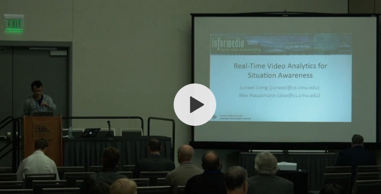
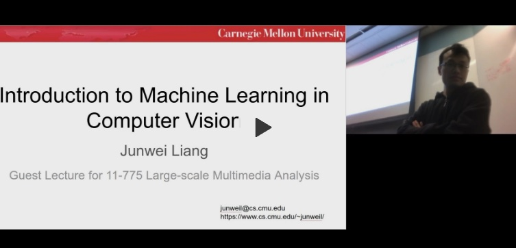

- HKUST (Guangzhou) AIAA 5036 Embodied AI [Spring 2024]
- HKUST (Guangzhou) AIAA 5032 Foundations of Artificial Intelligence [Spring 2024]
- HKUST (Guangzhou) AIAA 5036 Autonomous AI [Spring 2023]
- HKUST (Guangzhou) AIAA 5032 Foundations of Artificial Intelligence [Spring 2023]
- HKUST (Guangzhou) AIAA 6101 & 6102 AI Seminar [Fall 2023]

Public Safety Broadband Stakeholder Meeting hosted by NIST
zhihu.com
Presented in San Diego, 2018.

Guest Lecture at CMU 11-775: Intro to Machine learning in Computer Vision
zhihu.com
Spring 2020.
-
For more up-to-date news, please visit my lab website.
-
Invited Presentation @WAIC 2023: Towards General Video Understanding
[Link]
2023
-
Invited Presentation @RUC: Towards Fast and Accurate General Video Understanding
[Link]
2023
-
Invited Presentation @CVPR: Naturalist Driver Action Recognition
[Link]
2022Presented at AI City Challenge @ CVPR 2022 [Presentation] [Code and Model]
-
Invited Talk: Pedestrian Trajectory Prediction
[Link]
2021Presented at TechBeat.net [将门TechBeat] [B站]
-
Invited Presentation: The Garden of Forking Paths: Towards Multi-Future Trajectory Prediction
[Link]
2021Presented at ICPR'20 pattern forecasting workshop.
-
Research Presentation: The Garden of Forking Paths: Towards Multi-Future Trajectory Prediction
2020Presented internally at Waymo's machine learning reading group with about 60 attendees.
-
Research Presentation: The Garden of Forking Paths: Towards Multi-Future Trajectory Prediction
[Link]
2020Live presentation for CMU graduate students at LTI Summer Seminar.
-
Research Presentation: The Garden of Forking Paths: Towards Multi-Future Trajectory Prediction
[Talk]
2020Live presentation for hundreds of Chinese college students.
-
Contributed Talk: Shooter Localization Using Social Media Videos [Talk] 2020At AI for Social Good, Carnegie Mellon University
-
Guest Lecture: Introduction to Machine Learning in Computer Vision [Slides] [Video]202011-775 Large-scale Multimedia Analysis, hosted by Prof. Alex Hauptmann and Prof. Rita Singh, Carnegie Mellon University
-
Invited Talk: Real-time Video Analytics for Situation Awareness
[Talk-2018]
[Talk-2019]
2019At the Public Safety Communications Research annual conference hosted by NIST PSCR.
-
Oral Talk: Focal Visual-Text Attention for Memex Question Answering
2018At CMU LTI Student Research Symposium 2018. Received best paper honorable mentions award.
-
Spotlight Talk: Focal Visual-Text Attention for Visual Question Answering [Video]2018At CVPR 2018 in Salt Lake City
-
Oral Talk: Learning to Detect Concepts from Webly-Labeled Video Data
2016At IJCAI 2016 in New York City.
-
Teaching Assistant202111-775 Large-scale Multimedia Analysis, Carnegie Mellon University
-
Teaching Assistant2018LTI Colloquium, hosted by Prof. Alex Hauptmann, Carnegie Mellon University
-
Teaching Assistant2014Practical Course on Speech Synthesis and Building Synthetic Voices by Prof. Alan Black, Summer School of Renmin University of China